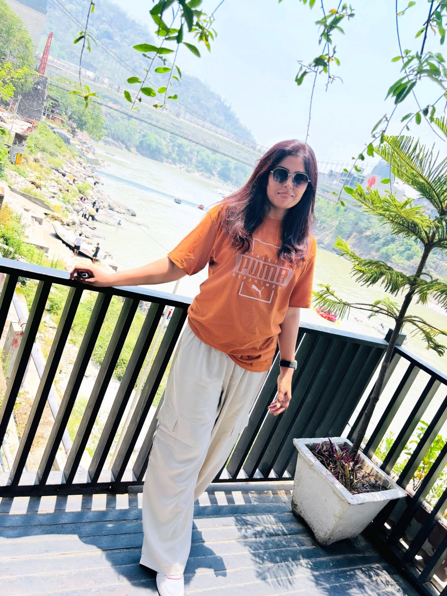

About Me
A little about who I am, where I come from and what I do.

Hello, I'm Supriya
I was born in Darbhanga, Bihar, and my home is in Ahila, Darbhanga. After completing my M.Com., I chose a career in banking, where I now serve as a Scale-I Officer at Bihar Gramin Bank.
I believe a bank is more than a place to keep money. It is a partner in people's growth. I approach my work with honesty, patience and a focus on making banking simple and accessible for everyone I serve.
My Journey
Education
Master of Commerce (M. Com.) — the foundation of my understanding of accounting, finance, economics and business, which I now apply in everyday banking.
Profession
Banker and Scale-I Officer at Bihar Gramin Bank, a regional rural bank focused on serving communities and strengthening financial access across Bihar.
Values
Integrity, service, continuous learning and respect for every customer — whether it is a first-time account holder or a seasoned entrepreneur.